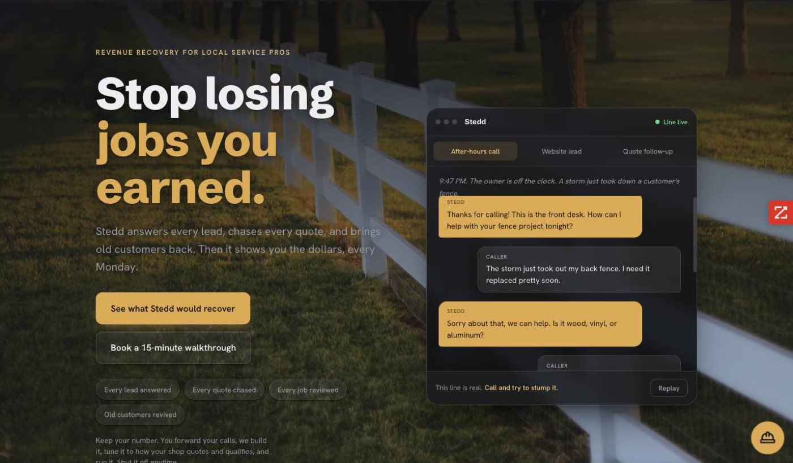
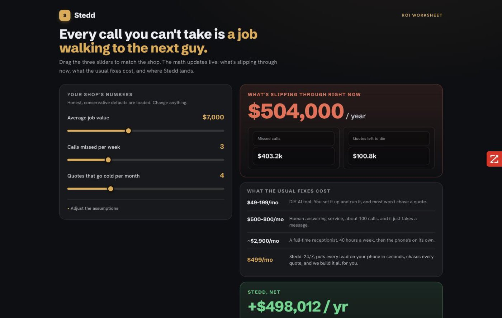
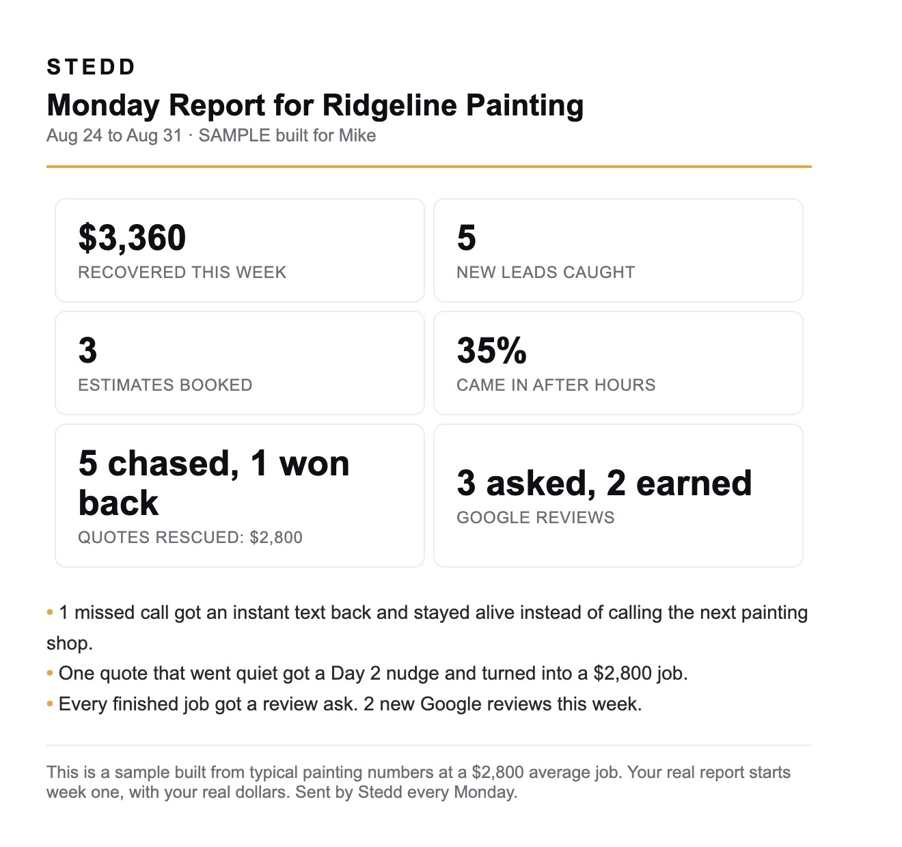

Stedd
I built a product for the trades because I understand two things most software people do not: follow-up marketing, and how a contractor's day actually goes.
What it is
Revenue recovery for trades businesses. Four engines: Catch answers and captures the calls that would have been missed, Chase follows up on quotes that went quiet, Keep turns finished jobs into reviews, and Revive re-engages customers who lapsed. Two-tier packaging. We stay out of the CRM category on purpose. Nobody in the trades wants another system to manage. They want the leaks plugged.
The buyer is usually the office manager, or the spouse running the front of house while the owner is on a roof. Everything is built for that person, down to reports in plain English with receipts attached.
What's running
- An AI voice agent that answers the line and books jobs while the caller is still on the call, checking the real calendar live and confirming a slot before hangup.
- Nightly transcript QA. Every call gets reviewed against my checklist, and anything flagged pages me.
- The prompt patch loop: the nightly QA proposes the smallest fix, I approve or reject from my phone with a single-use token, rollback is one click, and a monthly consolidation review keeps the prompt from drifting into a patchwork.
- The outcome confirmation loop: clients confirm each week which leads became jobs and which quotes closed, with a reply grammar a busy owner can answer in ten seconds.
- A per-client provisioner that stands up a phone number, a voice agent, and a website chat agent from one intake.
- Nightly Postgres backups emailed with row counts, error alerting on every workflow, a revenue leak audit generator for prospects, and a sample Monday Report generator for demos.
- Built and staged, waiting on carrier approval: the SMS engines and the founder daily digest.
The pilot is a pilot client in auto detailing, live on the voice line.
Stack
n8n on a digitalocean vps / postgres / retell / twilio / anthropic api / cloudflare workers (uptime monitor) / stripe / mercury / google business profile
There's also a self-hosted voice prototype, built on ConversationRelay, in the stedd-voice repo. Retell stays on the live line for now because my prototype isn't better than it yet. The README explains the tradeoff.
What I learned
A2P 10DLC registration will reject you for reasons that have nothing to do with what your product does, and every SMS feature you promised waits behind it. The SMS engines were built early and have sat staged for months. If I did it again I'd file the registration paperwork the same week as the LLC.
Early on I made a rule after watching how call handoffs actually land: the agent never presents itself as a replacement for a person the caller knows by name. It answers as the business, books the job, and never pretends to be anyone on the crew. Every prompt is written under that rule.
The outcome confirmation loop exists because dollars-saved reporting means nothing until somebody confirms the dollars. The system can count calls caught and quotes chased all day, but until the owner confirms a job actually closed, it's a guess. So confirmation is a product feature, and the Monday Report only claims what the client has confirmed.


